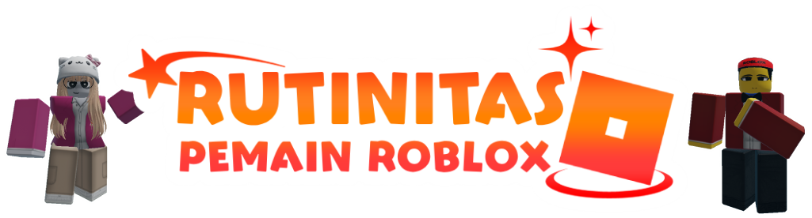

Beranda
Beranda

Rutinitas Pemain Roblox adalah sebuah komunitas Roblox yang berasal dari Indonesia dan salah satu entitas yang menyatukan komunitas-komunitas Indonesia di platform ini!
Survival Mix adalah mode Survival yang dipadukan dengan fitur-fitur tambahan, seperti plugin custom, ekonomi, rank system, atau elemen RPG.
Fitur-Fitur :
Skyblock Mode adalah mode di mana player memulai di sebuah pulau kecil di langit, dengan sumber daya yang sangat terbatas. Tujuan dari mode ini adalah untuk bertahan hidup, memperluas pulau, dan menyelesaikan berbagai challenge.
Dukungan Anda membantu perkembangan server kami. Konfirmasikan kepada Nikashi di Server Discord jika Anda mendonasikan untuk mendapatkan rank eksklusif Anda.
Pertanyaan yang Sering Diajukan di server Rutinitas Pemain Roblox.